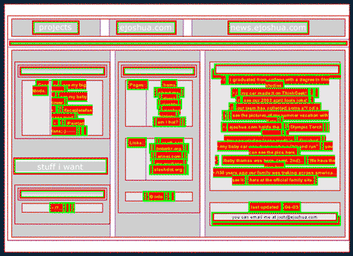

Often when trying to evangelize web standards I use a friend’s non-compliant website to offer a comparison in methodologies. Recently I came across a bookmarklet <http://meyerweb.com/eric/tools/favelets/> that outlines deprecated or poor use of various HTML tags and tried it on his site. Josh <http://www.ejoshua.com/> is going to hate me for posting this screenshot, but I thought it was funny.
Everything outlined in red or green is an error.
Posted 3014 days ago on 2005-01-26.